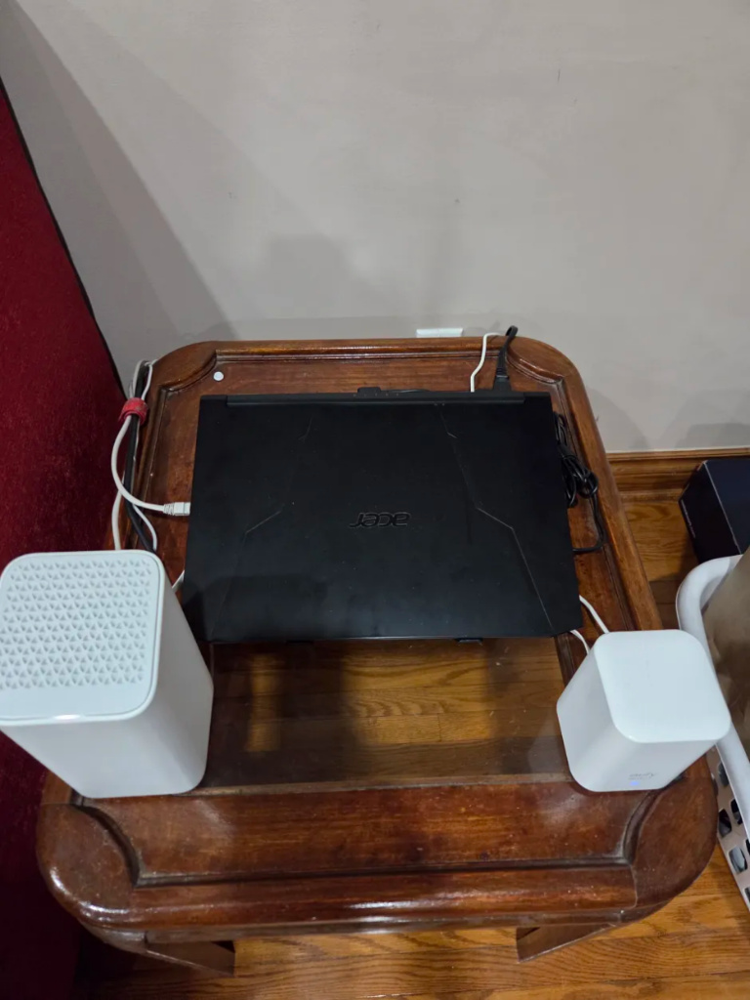
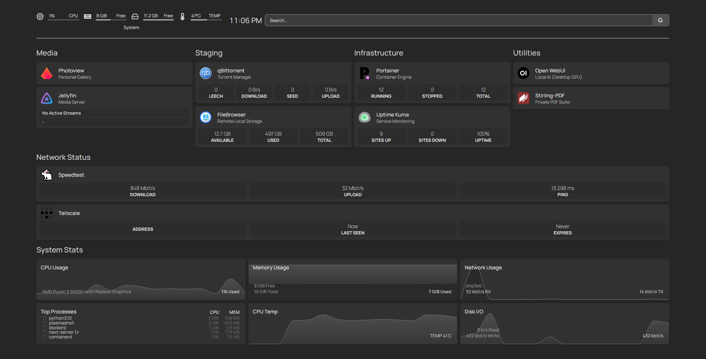

About Me
My name is Dhairya, and my journey into technology began long before I officially enrolled in the Computer Science program at York University. Growing up in Rexdale, Toronto, I was raised in a resilient community. The environment taught me early on about the value of resourcefulness, but my most profound inspiration has always been my parents. As immigrants to Canada, they navigated countless obstacles to build a successful life for our family. Watching their relentless work ethic deeply shaped my own character. Their journey taught me that success isn't handed to you; it is engineered through perseverance and making the most of the opportunities you are given.
This deep appreciation for resourcefulness naturally translated into my personal interests. I spend my time managing a compact personal home lab. There is a unique thrill in taking modest hardware, like a repurposed laptop and some essential networking gear, and configuring it into a functional local server environment. Optimizing this lightweight setup to run self-hosted services, manage network traffic, and test code is a fascinating puzzle. This goes beyond a simple hobby; it is a practical application of my technical curiosity, teaching me how to maximize utility out of constrained resources and understand important fundamentals like networking from the ground up.
When choosing a university, York University was the clear choice. Not only is the campus accessible to my home, but it offered the exact academic environment I needed. I chose to study Computer Science at Lassonde because I love computers, providing the perfect platform to transform my home lab experiments into a rigorous career. My background in hands-on troubleshooting, combined with the patience and analytical mindset I’ve developed, serve as my greatest academic strengths. I am accustomed to researching meticulously and solving complex technical problems, giving me a strong foundation for the challenges ahead.
To represent this foundational chapter, my first artifact is a photograph of my compact home lab. I chose this artifact because it perfectly captures my technical passion, the tangible results of my problem-solving skills, and the resourceful, hands-on work ethic I inherited from my parents.

My top ten values (Efficiency, Perseverance, Family Security, Continuous Learning, Problem-Solving, Independence, Financial Stability, Innovation, Competence, and Work-Life Balance) unsurprisingly reflect my hardworking upbringing and technical passions. However, I noticed a missing value: "Community". Growing up in Rexdale taught me that individual success is deeply tied to lifting those around you.
To me, Family Security means honoring my parents' sacrifices, while Financial Stability involves making resourceful decisions to build a secure future. Work-Life Balance is ensuring I have time to recharge. My remaining values frequently overlap in action, guided by my Reflective communication style, which favors deliberate, analytical thinking over impulsive decisions. For example, when a self-hosted service repeatedly failed to route properly through my network, I relied on my Independence and Perseverance. This fueled my Problem-Solving and Continuous Learning. Fixing the system required Innovation to ultimately achieve Competence and Efficiency.
Looking toward my career, I see a clear conflict between Financial Stability and Work-Life Balance. The tech industry offers lucrative paths to secure my family, but demanding project cycles could easily consume the personal time that keeps my passion alive. To succeed without burning out, I must seek out environments that value sustainable workloads and genuine productivity over simply clocking long hours.
My second artifact, a screenshot of my custom homepage dashboard displaying my active self-hosted services, represents these principles. It visualizes my Efficiency, Problem-Solving, and Competence, proving that perseverance yields tangible results.
